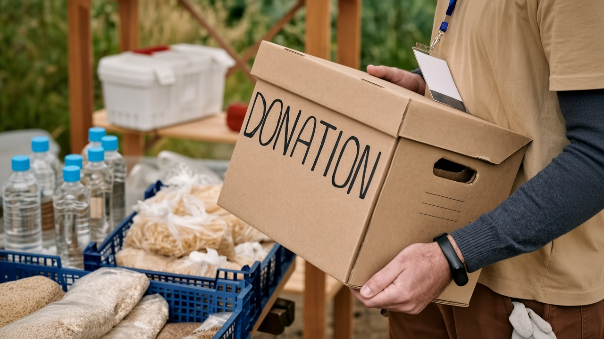

Catálogo de Kits de Necesidad y Normativa de Reparto
En ArropaBide no ofrecemos un sistema de libre elección estética ni prendas individuales sueltas. Diseñamos 'Kits de Necesidad' preparados por tallas y perfiles para dar una respuesta inmediata, ordenada y digna a las necesidades básicas de cada hogar.
Composición y características de los lotes
Cada lote está revisado previamente por el equipo de voluntariado en nuestro local:
| Tipo de Kit | Destinatario | Contenido Textil y Calzado | Contenido de Higiene | Frecuencia Máxima |
|---|---|---|---|---|
| Kit Adulto Invierno | Personas adultas / Jóvenes | 2 pantalones, 2 jerséis/sudaderas, 1 abrigo, 1 par de calzado revisado | Gel corporal, champú, cepillo y pasta dental | 1 cada 60 días |
| Kit Adulto Verano | Personas adultas / Jóvenes | 3 camisetas, 2 pantalones cortos/ligeros, 1 calzado de verano | Gel corporal, desodorante, higiene bucal | 1 cada 60 días |
| Kit Infantil / Bebé | Menores de 0 a 12 años | 4 mudas completas según talla, calzado infantil, chaqueta/polar | Pañales según talla, toallitas húmedas, jabón neutro | 1 cada 60 días |
| Kit Higiene Básico | Unidad familiar o individual | No incluye ropa (complementario) | Lote integral de aseo personal familiar para dos meses | 1 cada 60 días |
Reglas de acceso y distribución del servicio
- Acceso universal directo: Cualquier persona o familia en situación de necesidad puede solicitar ayuda en nuestro punto local sin derivación burocrática obligatoria.
- Solicitud presencial por necesidad objetiva: Los kits se entregan adaptados a la talla de la persona y a los miembros de la unidad de convivencia. No es un servicio de catálogo o tienda libre.
- Regla de control estricto de periodicidad: Para asegurar el abastecimiento de todo el vecindario, el sistema registra cada entrega limitando la reposición a un máximo de 1 kit por persona o familia cada 2 meses (60 días).
